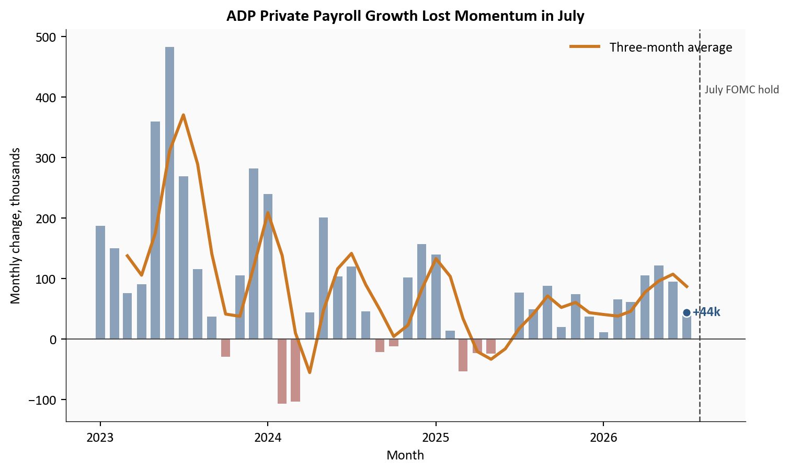
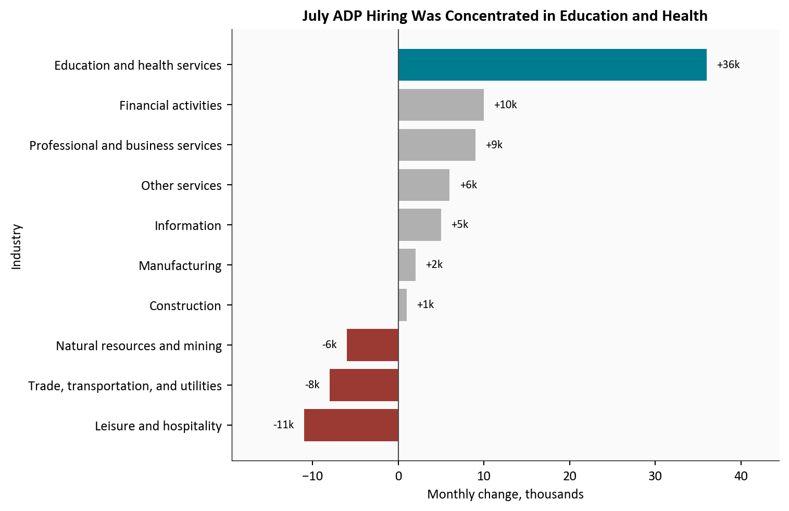
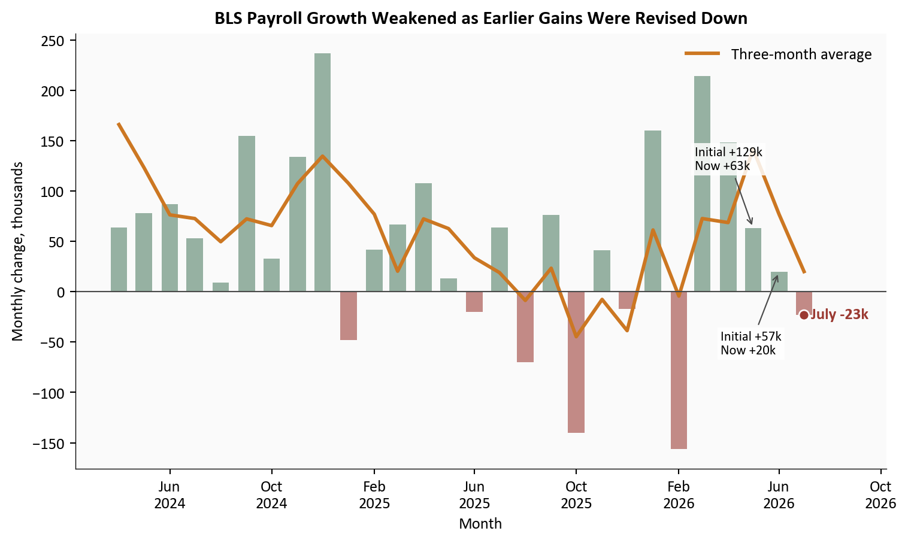
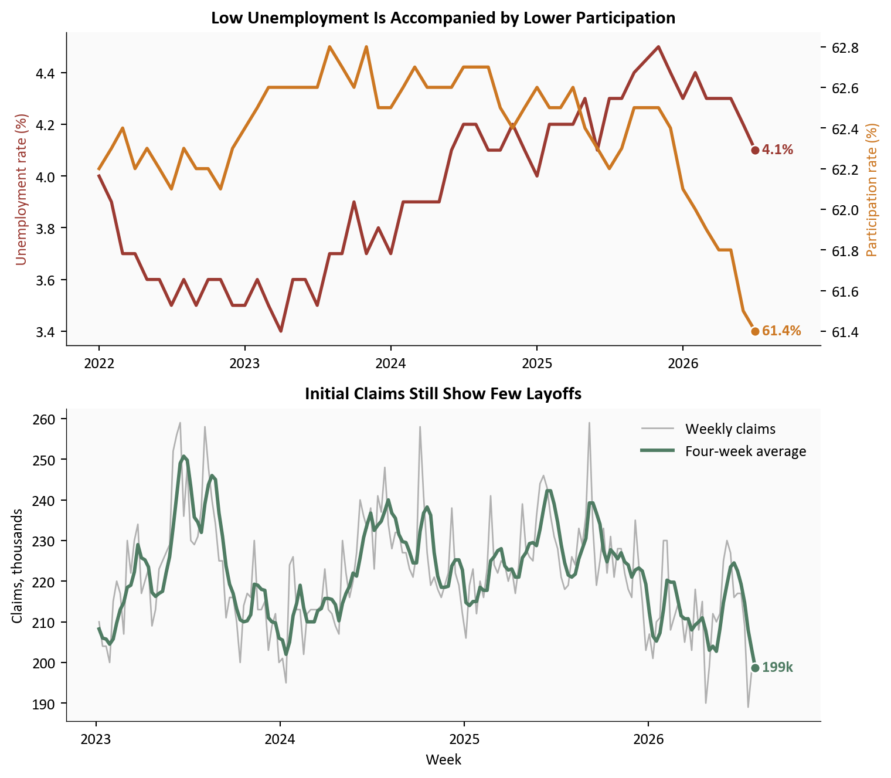
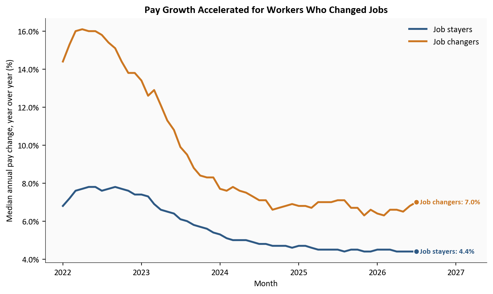

ADP private payrolls
+44k
July 2026
ADP education and health share
82%
July 2026
BLS total payrolls
-23k
July 2026
Initial claims, four-week average
199k
July 2026
Yoram Gilboa
August 7, 2026
ADP estimated that private employers added only 44,000 jobs in July. Education and health services supplied 82% of that increase, a striking sign that hiring was not broad.
Two days later, the Bureau of Labor Statistics, or BLS, reported that total nonfarm payrolls fell 23,000 and cut its earlier May and June estimates by a combined 103,000. That mix of weak hiring, low layoffs, and still-firm pay growth gives the Federal Reserve reasons to watch both sides of its mandate rather than rush toward either a rate cut or an increase.
The full Python pipeline and every chart block are included with this post:
scripts/01_fetch_data.py downloads validated FRED series and the official ADP employment and pay archives.scripts/02_clean_data.py converts the source files into chart-ready monthly and weekly tables.scripts/04_compute_stats.py creates every figure quoted in the prose and metric cards.Run the scripts in numeric order from this post directory, then render index.qmd. The pipeline uses pandas and matplotlib with official ADP, BLS, FRED, and Federal Reserve sources.
ADP and BLS do not measure the same group of jobs with the same method. ADP uses anonymized payroll records from its clients and covers private employment. The BLS establishment survey collects reports from employers and covers private plus government jobs. This post compares monthly changes and direction, not the two employment levels.
Private payrolls are jobs at companies and nonprofit employers, excluding government. Nonfarm payrolls are the broader BLS count of jobs at private employers and government agencies, excluding farm work and a few other categories.
ADP and the BLS establishment survey are separate estimates. ADP observes payroll transactions for more than 26 million workers. The BLS Current Employment Statistics survey, often called CES, asks a sample of employers how many people were on their payrolls. Neither is a preview that must match the other.
The unemployment rate is the share of people in the labor force who are jobless and actively looking. The participation rate is the share of the adult civilian population that is working or looking. Unemployment can fall for a healthy reason, because more people find work, or for a less encouraging reason, because people stop looking and leave the labor force.
Finally, initial claims count new applications for unemployment insurance. They are a timely measure of layoffs, not hiring. Job stayers remained with the same employer, while job changers moved to a different employer. Their pay gap can reveal how strongly firms must compete for available workers.
ADP’s July gain of 44,000 was less than half June’s revised 95,000 increase and below the Dow Jones consensus of 75,000. It pulled the three-month average down to 87,000. The monthly series has been uneven, but its direction since spring is clear: private employers have become more cautious about adding staff.
One soft month does not prove that employment is contracting. ADP revises its history as payroll records arrive and seasonal patterns are updated. Still, July was the weakest reading in the latest three-month stretch.
# Focus on the recent cycle so the pandemic does not flatten ordinary monthly changes.
plot_adp = adp.loc["2023-01-01":].copy()
plot_adp["three_month_avg"] = plot_adp["monthly_change_k"].rolling(3).mean()
fig, ax = plt.subplots(figsize=(8.0, 4.8))
bar_colors = np.where(plot_adp["monthly_change_k"] >= 0, COLORS["primary"], COLORS["accent"])
ax.bar(plot_adp.index, plot_adp["monthly_change_k"], width=20, color=bar_colors, alpha=0.55)
ax.plot(plot_adp.index, plot_adp["three_month_avg"], color=COLORS["warning"], linewidth=2.2,
label="Three-month average")
ax.axhline(0, color=COLORS["neutral"], linewidth=0.8)
# Mark the latest point and the July FOMC decision.
last_date = plot_adp.index[-1]
last_value = plot_adp["monthly_change_k"].iloc[-1]
ax.scatter(last_date, last_value, s=40, color=COLORS["primary"], edgecolors="white", zorder=5)
ax.text(last_date, last_value, f" {last_value:+.0f}k", color=COLORS["primary"], va="center",
fontweight="bold")
ax.axvline(pd.Timestamp("2026-07-29"), color=COLORS["neutral"], linestyle="--", linewidth=1)
ax.text(pd.Timestamp("2026-07-29"), ax.get_ylim()[1] * 0.82, " July FOMC hold", fontsize=8.5,
color=COLORS["neutral"], va="top")
date_span = plot_adp.index[-1] - plot_adp.index[0]
ax.set_xlim(right=plot_adp.index[-1] + date_span * 0.10)
ax.set_title("ADP Private Payroll Growth Lost Momentum in July", fontweight="bold")
ax.set_ylabel("Monthly change, thousands")
ax.set_xlabel("Month")
ax.xaxis.set_major_locator(mdates.YearLocator())
ax.xaxis.set_major_formatter(mdates.DateFormatter("%Y"))
ax.yaxis.set_major_formatter(ticker.StrMethodFormatter("{x:,.0f}"))
ax.legend(loc="upper right", frameon=False)
plt.tight_layout()
fig.savefig(IMG_DIR / "july-adp-payroll-trend.png", dpi=180, bbox_inches="tight")
Source: ADP Research Institute, National Employment Report historical data.
What this chart shows in plain English: Companies were still adding workers in July, but they did so at a much slower pace. Smoothing the noisy monthly bars confirms that the recent trend also weakened.
Education and health services added 36,000 jobs in ADP’s estimate. That was about 82% of the entire private-sector gain, leaving only about 8,000 net jobs across all other industries.
This sector includes private schools, hospitals, clinics, nursing facilities, child care, and social assistance. Much of its demand is tied to demographics and recurring care needs, so it can keep hiring when more cyclical industries pause. The other side of that stability is narrowness: a labor market is less resilient when most sectors are not contributing.
# Calculate July changes directly from ADP's seasonally adjusted industry levels.
july_industry = (
adp_industry[adp_industry["date"].eq("2026-07-01")]
.set_index("category")["monthly_change_k"]
.sort_values()
)
colors = [COLORS["focus"] if name == "Education and health services"
else COLORS["accent"] if value < 0 else COLORS["light"]
for name, value in july_industry.items()]
fig, ax = plt.subplots(figsize=(8.0, 5.2))
bars = ax.barh(july_industry.index, july_industry.values, color=colors)
ax.axvline(0, color=COLORS["neutral"], linewidth=0.8)
span = july_industry.max() - july_industry.min()
padding = span * 0.025
for bar, value in zip(bars, july_industry.values):
x = value + padding if value >= 0 else value - padding
ax.text(x, bar.get_y() + bar.get_height() / 2, f"{value:+.0f}k",
va="center", ha="left" if value >= 0 else "right", fontsize=8.5)
ax.set_title("July ADP Hiring Was Concentrated in Education and Health", fontweight="bold")
ax.set_xlabel("Monthly change, thousands")
ax.set_ylabel("Industry")
ax.xaxis.set_major_formatter(ticker.StrMethodFormatter("{x:,.0f}"))
ax.set_xlim(july_industry.min() - span * 0.18, july_industry.max() + span * 0.18)
plt.tight_layout()
fig.savefig(IMG_DIR / "july-adp-sector-contributions.png", dpi=180, bbox_inches="tight")
Source: ADP Research Institute, National Employment Report historical data.
What this chart shows in plain English: One industry group did nearly all the work. Losses in leisure and hospitality, trade and transportation, and natural resources offset gains elsewhere.
The BLS release on 08/07/2026 moved the story beyond a soft ADP estimate. Total payrolls fell 23,000 in July, although private payrolls rose 30,000. A drop in local government education accounted for much of the difference.
Revisions were more important than the July headline alone. May was reduced from +129,000 to +63,000, and June from +57,000 to +20,000. Over May through July, private employers added 121,000 jobs, while private education and health services added 103,000, or 85% of the private total.
# Monthly differences convert the BLS employment level into job gains or losses.
bls_plot = labor.loc["2024-01-01":, ["PAYEMS"]].copy()
bls_plot["monthly_change_k"] = bls_plot["PAYEMS"].diff()
bls_plot["three_month_avg"] = bls_plot["monthly_change_k"].rolling(3).mean()
bls_plot = bls_plot.dropna()
fig, ax = plt.subplots(figsize=(8.0, 4.8))
bar_colors = np.where(bls_plot["monthly_change_k"] >= 0, COLORS["secondary"], COLORS["accent"])
ax.bar(bls_plot.index, bls_plot["monthly_change_k"], width=20, color=bar_colors, alpha=0.58)
ax.plot(bls_plot.index, bls_plot["three_month_avg"], color=COLORS["warning"], linewidth=2.2,
label="Three-month average")
ax.axhline(0, color=COLORS["neutral"], linewidth=0.8)
# Show how the two previous headline estimates changed after more responses arrived.
for date, initial, revised, offset in [
(pd.Timestamp("2026-05-01"), stats["bls_may_initial_k"], stats["bls_may_revised_k"], 58),
(pd.Timestamp("2026-06-01"), stats["bls_june_initial_k"], stats["bls_june_revised_k"], -82),
]:
ax.annotate(f"Initial {initial:+.0f}k\nNow {revised:+.0f}k", xy=(date, revised),
xytext=(date - pd.Timedelta(days=70), revised + offset), fontsize=8.5,
arrowprops=dict(arrowstyle="->", color=COLORS["neutral"], linewidth=0.8),
bbox=dict(facecolor="white", alpha=0.85, edgecolor="none", pad=2))
last_date = bls_plot.index[-1]
last_value = bls_plot["monthly_change_k"].iloc[-1]
ax.scatter(last_date, last_value, s=40, color=COLORS["accent"], edgecolors="white", zorder=5)
ax.text(last_date, last_value, f" July {last_value:+.0f}k", color=COLORS["accent"], va="center",
fontweight="bold")
date_span = bls_plot.index[-1] - bls_plot.index[0]
ax.set_xlim(right=last_date + date_span * 0.12)
ax.set_title("BLS Payroll Growth Weakened as Earlier Gains Were Revised Down", fontweight="bold")
ax.set_ylabel("Monthly change, thousands")
ax.set_xlabel("Month")
ax.xaxis.set_major_locator(mdates.MonthLocator(interval=4))
ax.xaxis.set_major_formatter(mdates.DateFormatter("%b\n%Y"))
ax.legend(loc="upper right", frameon=False)
plt.tight_layout()
fig.savefig(IMG_DIR / "bls-payroll-revisions-july-2026.png", dpi=180, bbox_inches="tight")
Source: U.S. Bureau of Labor Statistics Current Employment Statistics, via FRED; revision values from the 08/07/2026 Employment Situation release.
What this chart shows in plain English: The latest month was weak, and the two months before it were weaker than first reported. That makes the slowdown a three-month pattern rather than a single disappointing estimate.
The labor market is soft, but it does not yet look like a classic layoff wave. New unemployment claims averaged about 199,000 a week through 08/01/2026, a low level by historical standards.
At the same time, the participation rate fell to 61.4%, down 0.7 percentage points since January. The unemployment rate also edged down to 4.1%, but that decline looks less reassuring when fewer adults are working or actively searching. Employers are not firing heavily, yet fewer people are attached to the labor force.
fig, (ax1, ax2) = plt.subplots(2, 1, figsize=(8.0, 7.0), sharex=False)
# Top panel: unemployment and participation use separate axes because their levels differ.
rates = labor.loc["2022-01-01":, ["UNRATE", "CIVPART"]].dropna()
ax1_right = ax1.twinx()
ax1.plot(rates.index, rates["UNRATE"], color=COLORS["accent"], linewidth=2,
label="Unemployment rate")
ax1_right.plot(rates.index, rates["CIVPART"], color=COLORS["warning"], linewidth=2,
label="Participation rate")
ax1.scatter(rates.index[-1], rates["UNRATE"].iloc[-1], s=40, color=COLORS["accent"],
edgecolors="white", zorder=5)
ax1_right.scatter(rates.index[-1], rates["CIVPART"].iloc[-1], s=40, color=COLORS["warning"],
edgecolors="white", zorder=5)
ax1.text(rates.index[-1], rates["UNRATE"].iloc[-1], f" {rates['UNRATE'].iloc[-1]:.1f}%",
color=COLORS["accent"], va="center", fontweight="bold")
ax1_right.text(rates.index[-1], rates["CIVPART"].iloc[-1],
f" {rates['CIVPART'].iloc[-1]:.1f}%", color=COLORS["warning"], va="center",
fontweight="bold")
ax1.set_ylabel("Unemployment rate (%)", color=COLORS["accent"])
ax1_right.set_ylabel("Participation rate (%)", color=COLORS["warning"])
ax1_right.grid(False)
ax1_right.spines["top"].set_visible(False)
ax1.set_title("Low Unemployment Is Accompanied by Lower Participation", fontweight="bold")
date_span = rates.index[-1] - rates.index[0]
ax1.set_xlim(right=rates.index[-1] + date_span * 0.10)
ax1.xaxis.set_major_locator(mdates.YearLocator())
ax1.xaxis.set_major_formatter(mdates.DateFormatter("%Y"))
# Bottom panel: weekly claims are smoothed with the standard four-week average.
claims_plot = claims.loc["2023-01-01":].copy() / 1000
ax2.plot(claims_plot.index, claims_plot["initial_claims"], color=COLORS["light"], linewidth=1,
label="Weekly claims")
ax2.plot(claims_plot.index, claims_plot["claims_4wk_avg"], color=COLORS["secondary"], linewidth=2.2,
label="Four-week average")
last_claim = claims_plot["claims_4wk_avg"].dropna().iloc[-1]
last_claim_date = claims_plot["claims_4wk_avg"].dropna().index[-1]
ax2.scatter(last_claim_date, last_claim, s=40, color=COLORS["secondary"], edgecolors="white", zorder=5)
ax2.text(last_claim_date, last_claim, f" {last_claim:.0f}k", color=COLORS["secondary"],
va="center", fontweight="bold")
claim_span = claims_plot.index[-1] - claims_plot.index[0]
ax2.set_xlim(right=claims_plot.index[-1] + claim_span * 0.10)
ax2.set_title("Initial Claims Still Show Few Layoffs", fontweight="bold")
ax2.set_ylabel("Claims, thousands")
ax2.set_xlabel("Week")
ax2.xaxis.set_major_locator(mdates.YearLocator())
ax2.xaxis.set_major_formatter(mdates.DateFormatter("%Y"))
ax2.legend(loc="upper right", frameon=False)
plt.tight_layout()
fig.savefig(IMG_DIR / "participation-claims-july-2026.png", dpi=180, bbox_inches="tight")
Source: U.S. Bureau of Labor Statistics and U.S. Department of Labor, via FRED.
What this chart shows in plain English: Few workers are filing new unemployment claims, so widespread layoffs are not driving the slowdown. Falling participation instead suggests that labor supply and hiring are both losing energy.
ADP’s pay measure rose 4.4% from a year earlier for job stayers. Job-changer pay growth accelerated to 7.0%, its fastest rate since August 2025. That widened the advantage over stayers to 2.6 percentage points.
That does not mean every worker changing jobs received a 7% raise. The measure compares median annual pay with a year earlier for people observed in ADP payroll records. Still, the acceleration says employers in some occupations must pay up to attract scarce workers even while aggregate hiring slows. The BLS measure of average hourly earnings, at roughly 3.2% year over year, is cooler because it covers a different population and uses a different statistic.
# Pivot worker types into separate columns for a direct comparison over time.
pay_plot = (
adp_pay.pivot(index="date", columns="worker_type", values="median_pay_change_pct")
.loc["2022-01-01":]
.dropna()
)
fig, ax = plt.subplots(figsize=(8.0, 4.8))
for column, color, label in [
("Job Stayer", COLORS["primary"], "Job stayers"),
("Job Changer", COLORS["warning"], "Job changers"),
]:
ax.plot(pay_plot.index, pay_plot[column], color=color, linewidth=2.2, label=label)
ax.scatter(pay_plot.index[-1], pay_plot[column].iloc[-1], s=40, color=color,
edgecolors="white", zorder=5)
ax.text(pay_plot.index[-1], pay_plot[column].iloc[-1],
f" {label}: {pay_plot[column].iloc[-1]:.1f}%", color=color, va="center",
fontweight="bold", fontsize=8.8)
date_span = pay_plot.index[-1] - pay_plot.index[0]
ax.set_xlim(right=pay_plot.index[-1] + date_span * 0.20)
ax.set_title("Pay Growth Accelerated for Workers Who Changed Jobs", fontweight="bold")
ax.set_ylabel("Median annual pay change, year over year (%)")
ax.set_xlabel("Month")
ax.xaxis.set_major_locator(mdates.YearLocator())
ax.xaxis.set_major_formatter(mdates.DateFormatter("%Y"))
ax.yaxis.set_major_formatter(ticker.PercentFormatter(xmax=100))
ax.legend(loc="upper right", frameon=False)
plt.tight_layout()
fig.savefig(IMG_DIR / "adp-pay-mobility-july-2026.png", dpi=180, bbox_inches="tight")
Source: ADP Research Institute, Pay Insights historical data.
What this chart shows in plain English: Hiring has slowed, but workers who successfully moved to a new employer received faster pay growth. Labor demand is weak in aggregate and still tight in selected occupations at the same time.
July’s labor data are best described as slow and narrow, not uniformly weak. ADP found modest private hiring, BLS found a small total payroll decline, and both showed education and health doing most of the positive work. The downward BLS revisions strengthen the case that momentum has faded over several months.
Yet the usual signs of an abrupt recession are missing. Claims remain low, unemployment is near 4%, and job changers have regained pay leverage. The softer signal comes from participation and breadth: fewer adults are in the labor force, and fewer industries are generating net gains.
This combination matters because broad job growth creates more ways for workers to find a match. Concentrated growth can keep the headline afloat while leaving people outside care and education with fewer openings. It also makes each monthly total more sensitive to seasonal movements in schools, hospitals, and government education.
The combined message is narrower than either “recession” or “resilience.” Private job growth slowed sharply, education and health carried most of what remained, prior BLS gains were revised lower, participation fell, and layoffs stayed low. With job changers still seeing faster pay growth, the Fed has evidence of cooling employment but not a clean all-clear on inflation. Patience and close attention to revisions are the most neutral reading of the data.
For the Fed. The Federal Open Market Committee held its target range at 3.5% to 3.75% on 07/29/2026 under Chair Kevin Warsh. The 3 dissents came from members who preferred a quarter-point increase, making them hawkish dissents. Softer payrolls argue against tightening quickly, while elevated inflation and faster switcher pay argue against declaring victory. A neutral reading is that the dual mandate is genuinely balanced: employment risks have risen, but price stability still requires attention.
For households and workers. Low claims mean most workers are keeping their jobs. Finding a new one may be harder outside education and health, however, and declining participation means some potential workers are no longer searching. The large switcher premium rewards mobility for people with in-demand skills, but it should not be read as a broad guarantee.
For investors. Narrow payroll growth can make markets more sensitive to revisions, claims, and inflation surprises. Bond yields may fall on weaker employment evidence and rise on firm wage or CPI data. The July mix does not point cleanly in either direction, so one release should not carry the full forecast.
For property and casualty insurers and actuaries. Continued health-care hiring can support payroll and workers’ compensation exposure in that sector. Faster wages can also lift indemnity benefits and the cost of claim-handling labor, while medical-sector wage pressure could eventually contribute to claim severity. The effect is modest and indirect, but it is worth separating exposure growth from wage-driven loss costs.
The July Consumer Price Index arrives on 08/12/2026. It will test whether softer hiring is occurring alongside easing inflation or whether the Fed still faces stubborn price pressure. Weekly claims will show whether low layoffs survive the late-summer period.
The preliminary annual CES benchmark estimate is due 08/28/2026. It will indicate whether payroll levels need a larger historical adjustment when compared with unemployment-insurance records. The next Employment Situation arrives 09/04/2026, followed by the next scheduled FOMC meeting on 09/15/2026-09/16/2026. Watch the revisions as closely as the first estimate.
Monthly payroll estimates are revised, sometimes substantially. ADP and BLS use different samples, coverage, seasonal adjustments, and benchmarking, so a gap between them is not an error. Sector contributions are differences in rounded employment levels and may not sum perfectly to the published headline.
The concentration shares use fixed groupings and private payroll gains as the denominator. They describe where net gains occurred, not gross hiring or job openings. A sector can hire many workers and still post a small net change if departures are also high. The pay comparison uses medians from ADP payroll records, while BLS average hourly earnings use means from the establishment survey.
| Series or table | Use in this post | Source |
|---|---|---|
| ADPMNUSNERSA, ADPMINDEDHLTNERSA | ADP private payroll trend and education/health comparison | FRED and ADP Research |
| PAYEMS, USPRIV, USEHS | Total, private, and private education/health payrolls | BLS via FRED |
| CES6561000001, CES6562000001, CES6562000101, CES6562400001 | Education, health care, and social assistance detail | BLS via FRED |
| UNRATE, CIVPART, ICSA | Unemployment, participation, and initial claims | FRED |
| ADP Pay Insights archive | Median pay change for job stayers and changers | ADP Pay Insights |
| Dow Jones consensus | July ADP payroll forecast | CNBC |
| Employment Situation release | Initial estimates and revisions | BLS |
| July FOMC statement | Rate decision and dissenting votes | Federal Reserve |
Python downloads the official ADP archives and validated FRED series, filters them to consistent monthly or weekly frequencies, and computes changes from seasonally adjusted levels. pandas handles the transformations and matplotlib draws all five figures. Summary values are saved once in stats/summary_stats.json so the text, cards, and charts use the same numbers.
Data current as of 08/08/2026. ADP data were released 08/05/2026; the July BLS Employment Situation was released 08/07/2026.